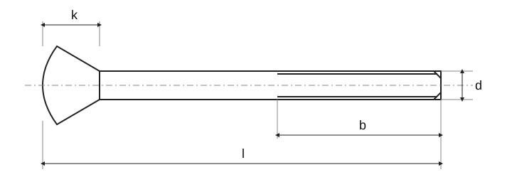

Vis à tête fraisée bombée à empreinte cruciforme
Source historique; valeurs et exceptions non intégralement vérifiées selon la norme actuelle.

Vis à tête fraisée bombée à empreinte cruciforme · Dimensions
| Paramètre | M1,6 | M2 | M2,5 | 3 | (M3,5) | M4 | M5 | M6 | M8 | M10 |
|---|---|---|---|---|---|---|---|---|---|---|
| Pas P | 0,35 | 0,4 | 0,45 | 0,5 | 0,6 | 0,7 | 0,8 | 1 | 1,25 | 1,5 |
| a _max.1) | 0,7 | 0,8 | 0,9 | 1 | 1,2 | 1,4 | 1,6 | 2 | 2,5 | 3 |
| b _min. | 25 | 25 | 25 | 25 | 38 | 38 | 38 | 38 | 38 | 38 |
| d _ktheor. | 3,6 | 4,4 | 5,5 | 6,3 | 8,2 | 9,4 | 10,4 | 12,6 | 17,3 | 20 |
| d _k max.1) | 3 | 3,8 | 4,7 | 5,5 | 7,3 | 8,4 | 9,3 | 11,3 | 15,8 | 18,3 |
| d _k min.1) | 2,7 | 3,5 | 4,4 | 5,2 | 6,94 | 8,04 | 8,94 | 10,87 | 15,37 | 17,78 |
| f ≈ | 0,4 | 0,5 | 0,6 | 0,7 | 0,8 | 1 | 1,2 | 1,4 | 2 | 2,5 |
| k 1) | 1 | 1,2 | 1,5 | 1,65 | 2,35 | 2,7 | 2,7 | 3,3 | 4,65 | 5 |
| r _max. | 0,4 | 0,5 | 0,6 | 0,8 | 0,9 | 1 | 1,3 | 1,5 | 2 | 2,5 |
| r _f ≈ | 3 | 4 | 5 | 6 | 8,5 | 9,5 | 9,5 | 12 | 16,5 | 19,5 |
| c _max. | 0,9 | 1 | 1,1 | 1,25 | 1,5 | 1,75 | 2 | 2,5 | 3,2 | 3,8 |
| Empreinte cruciforme · Taille d’empreinte cruciforme | 0 | 0 | 1 | 1 | 2 | 2 | 2 | 3 | 4 | 4 |
| Empreinte cruciforme · Tvar H · m | 1,9 | 2 | 3 | 3,4 | 4,8 | 5,2 | 5,4 | 7,3 | 9,6 | 10,4 |
| Empreinte cruciforme · Tvar H · hloubka_max. | 1,2 | 1,5 | 1,85 | 2,2 | 2,75 | 3,2 | 3,4 | 4,0 | 5,25 | 6,0 |
| Empreinte cruciforme · Tvar H · hloubka_min. | 0,9 | 1,2 | 1,5 | 1,8 | 2,25 | 2,7 | 2,9 | 3,5 | 4,75 | 5,5 |
| Empreinte cruciforme · Tvar Z · m | 1,9 | 2,2 | 2,8 | 3,1 | 4,6 | 5 | 5,3 | 7,1 | 9,5 | 10,3 |
| Empreinte cruciforme · Tvar Z · hloubka_max. | 1,20 | 1,40 | 1,75 | 2,08 | 2,70 | 3,10 | 3,35 | 3,85 | 5,20 | 6,05 |
| Empreinte cruciforme · Tvar Z · hloubka_min. | 0,95 | 1,15 | 1,50 | 1,83 | 2,25 | 2,65 | 2,90 | 3,40 | 4,75 | 5,60 |
Vis à tête fraisée bombée à empreinte cruciforme · Masses indicatives
| l [mm] | ± Δl [mm] | M1,6 [kg/1000] | M2 [kg/1000] | M2,5 [kg/1000] | M3 [kg/1000] | (M3,5) [kg/1000] | M4 [kg/1000] | M5 [kg/1000] | M6 [kg/1000] | M8 [kg/1000] | M10 [kg/1000] |
|---|---|---|---|---|---|---|---|---|---|---|---|
| 3 | 0,20 | 0,067 [F] | 0,119 [F] | 0,212 [F] | — | — | — | — | — | — | — |
| 4 | 0,24 | 0,078 [F] | 0,138 [F] | 0,242 [F] | 0,351 [F] | — | — | — | — | — | — |
| 5 | 0,24 | 0,090 [F] | 0,156 [F] | 0,272 [F] | 0,395 [F] | 0,669 [F] | 0,99 [F] | — | — | — | — |
| 6 | 0,24 | 0,102 [F] | 0,175 [F] | 0,302 [F] | 0,439 [F] | 0,729 [F] | 1,07 [F] | 1,49 [F] | — | — | — |
| 8 | 0,29 | 0,125 [F] | 0,212 [F] | 0,362 [F] | 0,527 [F] | 0,849 [F] | 1,23 [F] | 1,73 [F] | 2,79 [F] | — | — |
| 10 | 0,29 | 0,145 [F] | 0,249 [F] | 0,422 [F] | 0,615 [F] | 0,969 [F] | 1,39 [F] | 1,97 [F] | 3,14 [F] | 6,89 [F] | — |
| 12 | 0,35 | 0,165 [F] | 0,287 [F] | 0,482 [F] | 0,703 [F] | 1,09 [F] | 1,54 [F] | 2,21 [F] | 3,49 [F] | 7,53 [F] | 11,4 [F] |
| 14 | 0,35 | 0,185 [F] | 0,325 [F] | 0,543 [F] | 0,791 [F] | 1,21 [F] | 1,70 [F] | 2,45 [F] | 3,84 [F] | 8,17 [F] | 12,5 [F] |
| 16 | 0,35 | 0,205 [F] | 0,362 [F] | 0,603 [F] | 0,879 [F] | 1,33 [F] | 1,85 [F] | 2,69 [F] | 4,19 [F] | 8,81 [F] | 13,5 [F] |
| 20 | 0,42 | — | 0,436 [F] | 0,723 [F] | 1,060 [F] | 1,57 [F] | 2,17 [F] | 3,17 [F] | 4,89 [F] | 10,1 [F] | 16,5 [F] |
| 25 | 0,42 | — | — | 0,874 [F] | 1,280 [F] | 1,87 [F] | 2,56 [F] | 3,77 [F] | 5,77 [F] | 11,7 [F] | 18,0 [F] |
| 30 | 0,42 | — | — | — | 1,500 [F] | 2,17 [F] | 2,95 [F] | 4,37 [F] | 6,64 [F] | 13,3 [F] | 20,6 [F] |
| 35 | 0,5 | — | — | — | — | 2,47 [F] | 3,34 [F] | 4,97 [F] | 7,52 [F] | 14,9 [F] | 23,1 [F] |
| 40 | 0,5 | — | — | — | — | — | 3,73 [F] | 5,57 [F] | 8,39 [F] | 16,5 [F] | 25,6 [F] |
| 45 | 0,5 | — | — | — | — | — | — | 6,16 [F] | 9,27 [F] | 18,1 [F] | 28,1 [F] |
| 50 | 0,5 | — | — | — | — | — | — | 6,76 | 10,1 | 19,7 | 30,7 |
| 55 | 0,95 | — | — | — | — | — | — | — | 11,0 | 21,3 | 33,2 |
| 60 | 0,95 | — | — | — | — | — | — | — | 11,9 | 22,9 | 35,7 |
Vis à tête fraisée bombée à empreinte cruciforme · Contexte normatif
| Élément | Valeur |
|---|---|
| Contexte normatif | ISO 7047:2011 |
| Grade de produit | A |
| Classe de qualité | Norme intégrale nécessaire pour vérifier dimensions, tolérances et toutes les conditions. |
Vis à tête fraisée bombée à empreinte cruciforme · Dimensions
| Paramètre | M1,6 | M2 | M2,5 | 3 | (M3,5) | M4 |
|---|---|---|---|---|---|---|
| Pas P | 0,35 | 0,4 | 0,45 | 0,5 | 0,6 | 0,7 |
| a _max.1) | 0,7 | 0,8 | 0,9 | 1 | 1,2 | 1,4 |
| b _min. | 25 | 25 | 25 | 25 | 38 | 38 |
| d _ktheor. | 3,6 | 4,4 | 5,5 | 6,3 | 8,2 | 9,4 |
| d _k max.1) | 3 | 3,8 | 4,7 | 5,5 | 7,3 | 8,4 |
| d _k min.1) | 2,7 | 3,5 | 4,4 | 5,2 | 6,94 | 8,04 |
| f ≈ | 0,4 | 0,5 | 0,6 | 0,7 | 0,8 | 1 |
| k 1) | 1 | 1,2 | 1,5 | 1,65 | 2,35 | 2,7 |
| r _max. | 0,4 | 0,5 | 0,6 | 0,8 | 0,9 | 1 |
| r _f ≈ | 3 | 4 | 5 | 6 | 8,5 | 9,5 |
| c _max. | 0,9 | 1 | 1,1 | 1,25 | 1,5 | 1,75 |
| Empreinte cruciforme · Taille d’empreinte cruciforme | 0 | 0 | 1 | 1 | 2 | 2 |
| Empreinte cruciforme · Tvar H · m | 1,9 | 2 | 3 | 3,4 | 4,8 | 5,2 |
| Empreinte cruciforme · Tvar H · hloubka_max. | 1,2 | 1,5 | 1,85 | 2,2 | 2,75 | 3,2 |
| Empreinte cruciforme · Tvar H · hloubka_min. | 0,9 | 1,2 | 1,5 | 1,8 | 2,25 | 2,7 |
| Empreinte cruciforme · Tvar Z · m | 1,9 | 2,2 | 2,8 | 3,1 | 4,6 | 5 |
| Empreinte cruciforme · Tvar Z · hloubka_max. | 1,20 | 1,40 | 1,75 | 2,08 | 2,70 | 3,10 |
| Empreinte cruciforme · Tvar Z · hloubka_min. | 0,95 | 1,15 | 1,50 | 1,83 | 2,25 | 2,65 |
Vis à tête fraisée bombée à empreinte cruciforme · Dimensions
| Paramètre | M5 | M6 | M8 | M10 |
|---|---|---|---|---|
| Pas P | 0,8 | 1 | 1,25 | 1,5 |
| a _max.1) | 1,6 | 2 | 2,5 | 3 |
| b _min. | 38 | 38 | 38 | 38 |
| d _ktheor. | 10,4 | 12,6 | 17,3 | 20 |
| d _k max.1) | 9,3 | 11,3 | 15,8 | 18,3 |
| d _k min.1) | 8,94 | 10,87 | 15,37 | 17,78 |
| f ≈ | 1,2 | 1,4 | 2 | 2,5 |
| k 1) | 2,7 | 3,3 | 4,65 | 5 |
| r _max. | 1,3 | 1,5 | 2 | 2,5 |
| r _f ≈ | 9,5 | 12 | 16,5 | 19,5 |
| c _max. | 2 | 2,5 | 3,2 | 3,8 |
| Empreinte cruciforme · Taille d’empreinte cruciforme | 2 | 3 | 4 | 4 |
| Empreinte cruciforme · Tvar H · m | 5,4 | 7,3 | 9,6 | 10,4 |
| Empreinte cruciforme · Tvar H · hloubka_max. | 3,4 | 4,0 | 5,25 | 6,0 |
| Empreinte cruciforme · Tvar H · hloubka_min. | 2,9 | 3,5 | 4,75 | 5,5 |
| Empreinte cruciforme · Tvar Z · m | 5,3 | 7,1 | 9,5 | 10,3 |
| Empreinte cruciforme · Tvar Z · hloubka_max. | 3,35 | 3,85 | 5,20 | 6,05 |
| Empreinte cruciforme · Tvar Z · hloubka_min. | 2,90 | 3,40 | 4,75 | 5,60 |
Vis à tête fraisée bombée à empreinte cruciforme · Masses indicatives
| l [mm] | ± Δl [mm] | M1,6 [kg/1000] | M2 [kg/1000] | M2,5 [kg/1000] | M3 [kg/1000] | (M3,5) [kg/1000] |
|---|---|---|---|---|---|---|
| 3 | 0,20 | 0,067 [F] | 0,119 [F] | 0,212 [F] | — | — |
| 4 | 0,24 | 0,078 [F] | 0,138 [F] | 0,242 [F] | 0,351 [F] | — |
| 5 | 0,24 | 0,090 [F] | 0,156 [F] | 0,272 [F] | 0,395 [F] | 0,669 [F] |
| 6 | 0,24 | 0,102 [F] | 0,175 [F] | 0,302 [F] | 0,439 [F] | 0,729 [F] |
| 8 | 0,29 | 0,125 [F] | 0,212 [F] | 0,362 [F] | 0,527 [F] | 0,849 [F] |
| 10 | 0,29 | 0,145 [F] | 0,249 [F] | 0,422 [F] | 0,615 [F] | 0,969 [F] |
| 12 | 0,35 | 0,165 [F] | 0,287 [F] | 0,482 [F] | 0,703 [F] | 1,09 [F] |
| 14 | 0,35 | 0,185 [F] | 0,325 [F] | 0,543 [F] | 0,791 [F] | 1,21 [F] |
| 16 | 0,35 | 0,205 [F] | 0,362 [F] | 0,603 [F] | 0,879 [F] | 1,33 [F] |
| 20 | 0,42 | — | 0,436 [F] | 0,723 [F] | 1,060 [F] | 1,57 [F] |
| 25 | 0,42 | — | — | 0,874 [F] | 1,280 [F] | 1,87 [F] |
| 30 | 0,42 | — | — | — | 1,500 [F] | 2,17 [F] |
| 35 | 0,5 | — | — | — | — | 2,47 [F] |
| 40 | 0,5 | — | — | — | — | — |
| 45 | 0,5 | — | — | — | — | — |
| 50 | 0,5 | — | — | — | — | — |
| 55 | 0,95 | — | — | — | — | — |
| 60 | 0,95 | — | — | — | — | — |
Vis à tête fraisée bombée à empreinte cruciforme · Masses indicatives
| l [mm] | M4 [kg/1000] | M5 [kg/1000] | M6 [kg/1000] | M8 [kg/1000] | M10 [kg/1000] |
|---|---|---|---|---|---|
| 3 | — | — | — | — | — |
| 4 | — | — | — | — | — |
| 5 | 0,99 [F] | — | — | — | — |
| 6 | 1,07 [F] | 1,49 [F] | — | — | — |
| 8 | 1,23 [F] | 1,73 [F] | 2,79 [F] | — | — |
| 10 | 1,39 [F] | 1,97 [F] | 3,14 [F] | 6,89 [F] | — |
| 12 | 1,54 [F] | 2,21 [F] | 3,49 [F] | 7,53 [F] | 11,4 [F] |
| 14 | 1,70 [F] | 2,45 [F] | 3,84 [F] | 8,17 [F] | 12,5 [F] |
| 16 | 1,85 [F] | 2,69 [F] | 4,19 [F] | 8,81 [F] | 13,5 [F] |
| 20 | 2,17 [F] | 3,17 [F] | 4,89 [F] | 10,1 [F] | 16,5 [F] |
| 25 | 2,56 [F] | 3,77 [F] | 5,77 [F] | 11,7 [F] | 18,0 [F] |
| 30 | 2,95 [F] | 4,37 [F] | 6,64 [F] | 13,3 [F] | 20,6 [F] |
| 35 | 3,34 [F] | 4,97 [F] | 7,52 [F] | 14,9 [F] | 23,1 [F] |
| 40 | 3,73 [F] | 5,57 [F] | 8,39 [F] | 16,5 [F] | 25,6 [F] |
| 45 | — | 6,16 [F] | 9,27 [F] | 18,1 [F] | 28,1 [F] |
| 50 | — | 6,76 | 10,1 | 19,7 | 30,7 |
| 55 | — | — | 11,0 | 21,3 | 33,2 |
| 60 | — | — | 11,9 | 22,9 | 35,7 |
Vis à tête fraisée bombée à empreinte cruciforme · Contexte normatif
| Élément | Valeur |
|---|---|
| Contexte normatif | ISO 7047:2011 |
| Grade de produit | A |
| Classe de qualité | Norme intégrale nécessaire pour vérifier dimensions, tolérances et toutes les conditions. |